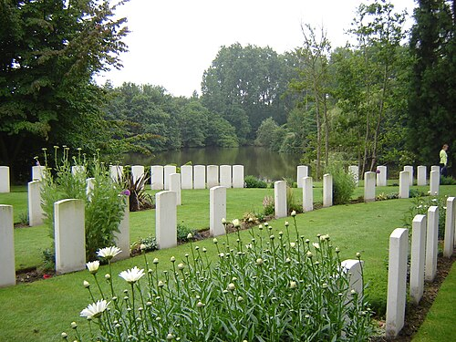
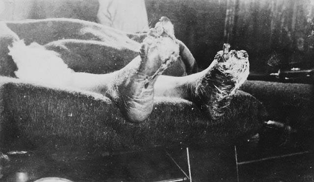
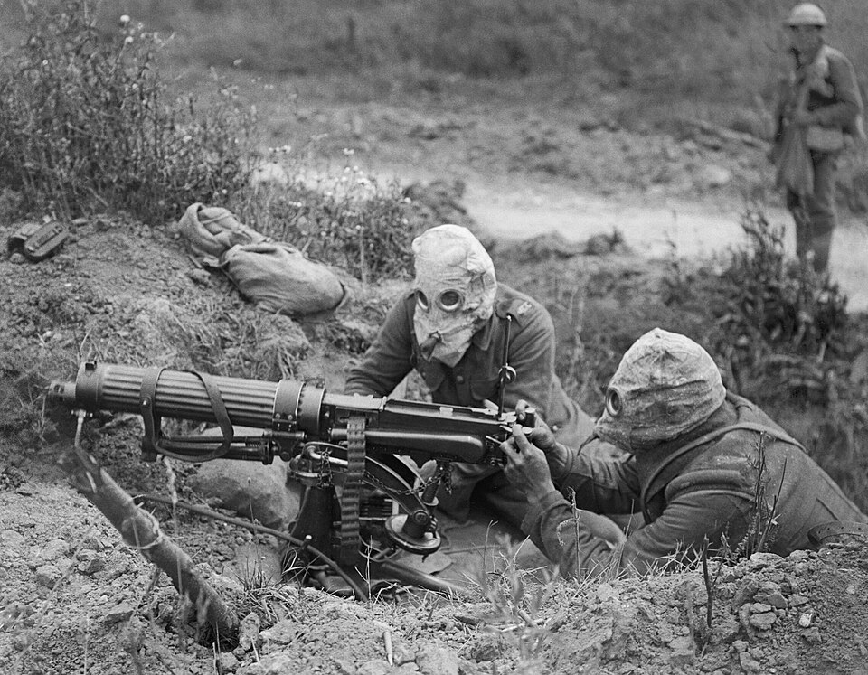
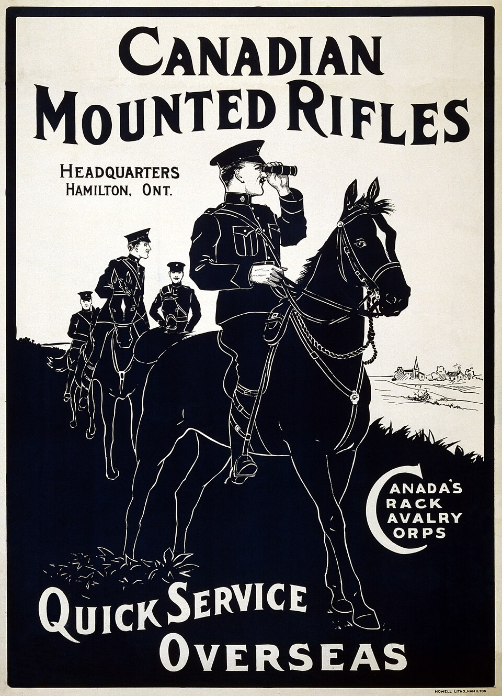
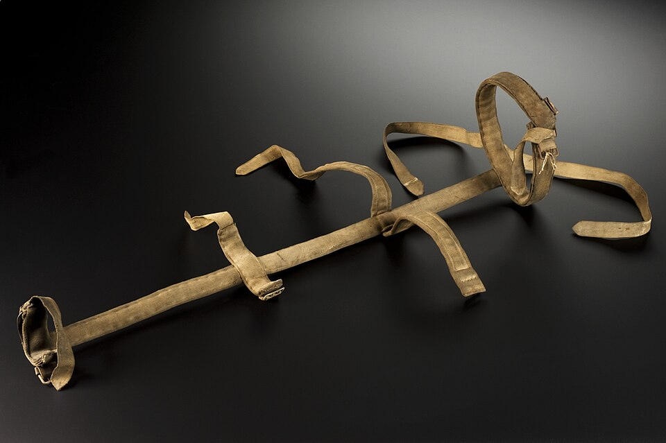
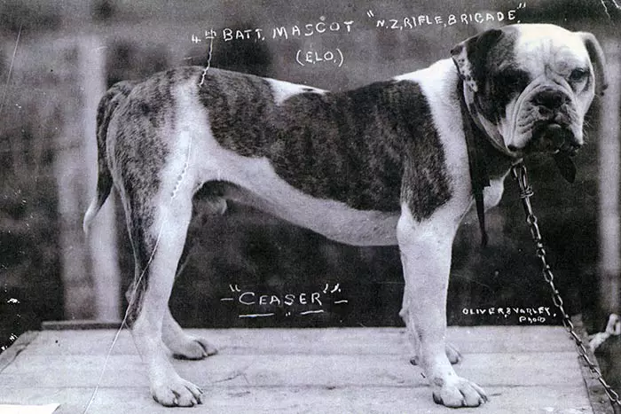
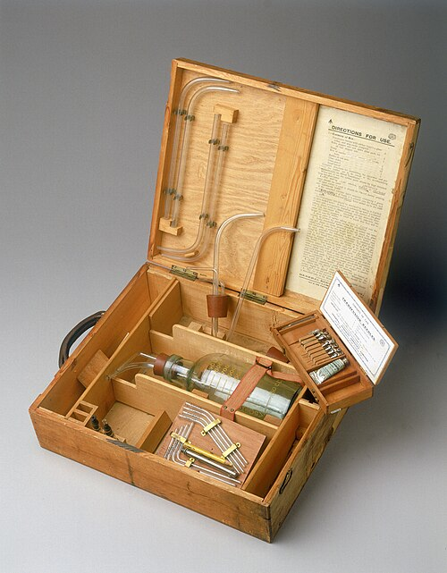
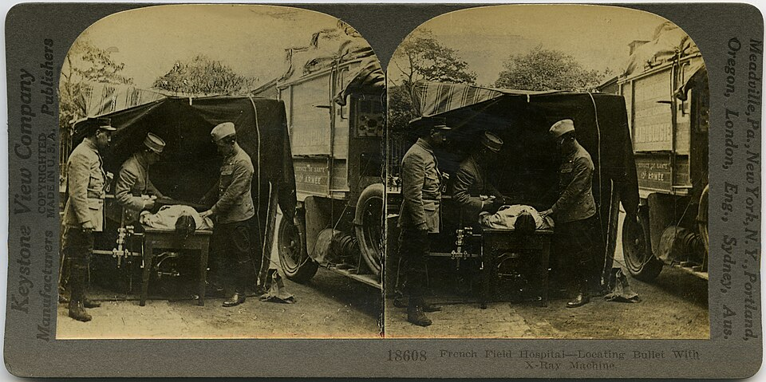

Western Front
Paper 1: Medicine Through Time with the Western Front
Course Textbook
Enquiry: How has medicine changed from c1250 to the modern day?
Contents
|
Lesson 1: KT5.1: The Theatre of War: The British Sector, Trench Geography & Battles (1914–1918)
|
|
|
Lesson 2: KT5.2: The Trench Environment: Mud, Vermin & Non-Combat Illnesses (1914–1918)
|
|
|
Lesson 3: KT5.3: Battlefield Trauma: High Explosive Shrapnel, Gas Attacks & Infection (1914–1918)
|
|
|
Lesson 4: KT5.4: The Chain of Evacuation: Stretcher Bearers, RAP, Dressing Stations & CCS (1914–1918)
|
|
|
Lesson 5: KT5.5: Surgical Breakthroughs: The Thomas Splint, Wound Debridement & Mobile X-Rays (1914–1918)
|
|
|
Lesson 6: KT5.6: Lifesaving Innovations: Blood Storage, Brain Surgery & Plastic Reconstruction (1914–1918)
|
|
L1: KT5.1: The Theatre of War: The British Sector, Trench Geography & Battles (1914–1918)[[SRC_MARKER:L20_Start]]
Learning Objectives
Explain why armies constructed trench systems and describe the structural layout of the British sector.
Analyze the strategic vulnerability of the Ypres Salient and the medical challenges of fighting in Flanders clay.
Assess the medical impact of major British offensives at the Somme (1916), Arras (1917), and Cambrai (1917).
In autumn 1914, the mobile war of movement ground to a shuddering halt in the mud of northern France and Flanders. Confronted by lethal rapid-firing artillery and Vickers machine guns, British and German armies dug thousands of miles of opposing earthworks stretching from the Swiss border to the North Sea. The British sector—defending key Channel ports and the precarious Ypres Salient—forced military doctors to operate inside waterlogged, shell-smashed ditches where every geological feature dictated life, death, and casualty evacuation.
Vocabulary Check
The Odd One Out: Circle ONE term that does not belong with the others. Explain your reasoning: What historical connection links the other terms, and why is your chosen term different?
Frontline Trench | Communication Trench | Traverse | Ypres Salient | Thompson’s Cave
Teacher Model / Pupil Reasoning:
[[SRC_MARKER:L20_Source_0]]
Source S1: Aerial Reconnaissance Photograph of British Trench System near Ypres (1917)

Royal Flying Corps aerial photograph showing the intricate zig-zag traverses of frontline, support, and communication trenches near Ypres, criss-crossed with artillery shell craters.
[[SRC_MARKER:L20_Source_1]]
Source S2: Photograph of a Flooded Communication Trench in the Ypres Salient (1917)

British soldiers navigating a communication trench submerged in muddy water during the Third Battle of Ypres (Passchendaele), showing duckboards floating and collapsed trench revetments.
[1.1] In August 1914, the British Expeditionary Force (BEF) deployed to France expecting a war of rapid movement, sweeping cavalry maneuvers, and decisive open-field engagements. However, the lethal reality of industrialized firepower immediately shattered these nineteenth-century tactical assumptions. Modern breech-loading artillery firing high-explosive shells, combined with rapid-firing Vickers machine guns capable of discharging 500 rounds per minute, rendered open infantry advances suicidal. Following the Battle of the Marne and the subsequent "Race to the Sea," both armies attempted to outflank each other northwards until they collided with the Belgian coast.
[1.2] By November 1914, with neither side able to break through, soldiers dug into the earth to escape the devastating hail of artillery shrapnel and rifle fire. What began as shallow, temporary scrape ditches evolved into an intricate, continuous defensive earthwork extending over 400 miles from the English Channel to the Swiss frontier. For the British Army, the Western Front was concentrated in northern France and Belgium, tasked with defending the critical Channel ports of Boulogne, Calais, and Dunkirk—the vital logistical lifeline through which food, ammunition, fresh reinforcements, and medical supplies flowed from Britain.
[[SRC_MARKER:L20_Source_3]]
Source S3: Aerial Reconnaissance Photograph of British Trench System near Ypres (1917)
Royal Flying Corps aerial photograph showing the intricate zig-zag traverses of frontline, support, and communication trenches near Ypres, criss-crossed with artillery shell craters.
[2.1] The British trench system was not a single ditch, but an elaborate four-tier network arranged in depth. The frontline trench, situated within 50 to 200 yards of the German lines, was where troops mounted guard on the raised firestep. Behind it lay the support trench (roughly 80 yards back) and the reserve trench (several hundred yards further behind), housing counter-attack battalions. Connecting these parallel tiers were deep, zig-zagging communication trenches through which stretcher bearers, food carriers, and relief troops moved under cover. To prevent enemy machine gunners from firing along the entire trench if they breached the parapet, trenches were deliberately dug with sharp right-angled bends called traverses. Aerial reconnaissance photographs (Source A) reveal this unmistakable saw-tooth geometry, designed to localize high-explosive shell bursts to a single firebay.
[2.2] The most contested and deadly sector held by British forces was the Ypres Salient in West Flanders. A "salient" is an outward military bulge into enemy territory, surrounded on three sides. At Ypres, the German army held the higher, surrounding crescent of ridges (such as Passchendaele and Messines), giving them commanding artillery observation over every British movement in the low-lying basin below. Geologically, Flanders consisted of thick clay with a water table just two to three feet below the surface. When prolonged shelling pulverized the natural land drainage ditches, the ground liquefied into an ocean of putrid mud. British frontline trenches could rarely be dug more than two feet deep; instead, soldiers constructed sandbagged breastworks above ground level.
[[SRC_MARKER:L20_Source_4]]
Source S4: Photograph of a Flooded Communication Trench in the Ypres Salient (1917)
British soldiers navigating a communication trench submerged in muddy water during the Third Battle of Ypres (Passchendaele), showing duckboards floating and collapsed trench revetments.
[3.1] Between 1915 and 1917, British commanders launched major offensives across distinct geographical sectors, each confronting the Royal Army Medical Corps (RAMC) with unprecedented trauma. In the Ypres Salient, incessant rain and artillery bombardment transformed communication trenches into impassable, waist-deep canals (Source B). Stretcher bearers took six to ten hours to haul a single wounded soldier through a few miles of liquefied mud, with many drowning in liquid-filled shell craters before reaching an aid post. At Hill 60, a man-made hillock near Ypres, British tunnelling companies burrowed deep into the sand and clay to detonate massive underground mines in April 1915, blasting craters that became immediate focal points of intense hand-to-hand combat and shattered limb wounds.
[3.2] South in the Somme sector, chalky downland provided drier ground but no relief from industrial slaughter. On 1 July 1916—the catastrophic first day of the Battle of the Somme—the British Army suffered 57,470 casualties, including 19,240 dead. The sheer volume of wounded men completely swamped the chain of evacuation: motor ambulances broke down, dressing stations ran out of morphine and bandages, and casualties lay unattended on open stretchers for days. Conversely, at Arras in northern France, the British exploited ancient subterranean Roman and medieval chalk quarries. In 1916–17, New Zealand and British tunnelling companies linked these caverns into a vast underground city capable of sheltering 25,000 men. This subterranean fortress included electric lighting, running water, and an immense 700-bed underground hospital known as Thompson’s Cave, allowing surgeons to operate free from the terror of surface artillery bombardment.
[4.1] At the Battle of Cambrai in November 1917, the British deployed massed tank assaults across rolling, unbroken agricultural chalkland, demonstrating how terrain dictated tactical breakthroughs. Historiographers debate whether the horrific casualties of the Western Front were the inevitable consequence of industrial technology outstripping communications, or the result of rigid command doctrine. Early revisionist historians termed British generals "donkeys leading lions," emphasizing callous incompetence in ordering infantry against intact barbed wire in waterlogged terrain. Conversely, modern military and medical historians, such as Gary Sheffield and Mark Harrison, demonstrate that the British Army underwent a colossal, rapid learning curve. Operating on the Western Front required solving logistical, sanitary, and surgical challenges never before witnessed in human history.
[4.2] Ultimately, the British sector was defined by its geological constraints. In the flooded clay of the Ypres Salient, medical evacuation was an excruciating battle against physical exhaustion and drowning; in the chalk caverns of Arras, medical teams created sophisticated subterranean operating wards; and at the Somme, the staggering volume of battlefield casualties forced the RAMC to transform from a rudimentary transport corps into a mechanized, triage-driven medical machine. The physical terrain of northern France and Flanders was not merely the background to the war—it was the active crucible that forged modern trauma medicine.
GCSE Exam Practice
Q1.
Q2.
L2: KT5.2: The Trench Environment: Mud, Vermin & Non-Combat Illnesses (1914–1918)[[SRC_MARKER:L21_Start]]
Learning Objectives
Explain the cause, symptoms, and medical treatment of Trench Foot.
Analyze the transmission and impact of Trench Fever and Body Lice.
Evaluate the role of underground dressing stations and sanitation measures.
Long before an infantryman faced enemy machine guns or artillery barrages, he fought an agonizing daily battle against the environment itself. Submerged in freezing, stagnant water saturated with human excrement and decomposing corpses, soldiers fell prey to devastating non-combat ailments. From the black, rotting necrosis of trench foot to the debilitating bone-pain of trench fever spread by swarms of body lice, maintaining the physical health of an army in the trenches demanded ruthless preventive medical discipline.
Vocabulary Check
The Golden Sentence: Choose TWO terms from the word bank. Write ONE grammatically sophisticated, historically accurate sentence connecting them using a causal conjunction (because, although, or consequently):
Trench Foot | Whale Oil | Trench Fever | Body Lice | Chloride of Lime
Teacher Model / Pupil Sentence:
[[SRC_MARKER:L21_Source_0]]
Source S1: Soldiers of the Cheshire Regiment Greasing Feet in a Reserve Trench (1916)

British infantrymen of the 8th Battalion, Cheshire Regiment, seated on the firestep of a trench, removing their boots and rubbing whale oil onto their feet under the supervision of a non-commissioned officer.
[[SRC_MARKER:L21_Source_1]]
Source S2: Photograph of the Ramparts Underground Medical Dressing Station, Ypres (c.1916)

RAMC medical orderlies and stretcher bearers outside the subterranean vaulted brick entrance of the Ramparts Dressing Station, built deep into the 17th-century fortifications of Ypres.
[1.1] The physical geography of northern France and Flanders exerted a relentless, hostile pressure on the health of the British Army. The coastal plains of Belgium and northern France were naturally low-lying, reclaimed marshland underlain by impermeable, dense clay. Beneath the soil, the water table sat mere feet below the surface. Before 1914, this rich agricultural land was maintained by an intricate, fragile system of underground ceramic drainage pipes, roadside ditches, and drainage dykes. Millions of high-explosive artillery shells systematically pulverized this drainage infrastructure, turning the topsoil into a liquid soup of putrid mud.
[1.2] For British soldiers stationed in the trenches, standing in cold, stagnant water was an inescapable reality of daily life. In winter, temperatures regularly plunged below freezing, chilling the mud to ice. Furthermore, soldiers wore tight woollen puttees—long fabric strips wrapped tightly around the calves and ankles from the boot to the knee. When drenched in freezing mud, the wool shrank, acting as an unintended tourniquet that severely restricted peripheral blood flow to the lower extremities. By November 1914, medical officers noted an alarming epidemic: thousands of men were reporting to medical dugouts unable to walk, their feet swollen, numb, and drained of color.
[[SRC_MARKER:L21_Source_3]]
Source S3: Soldiers of the Cheshire Regiment Greasing Feet in a Reserve Trench (1916)
British infantrymen of the 8th Battalion, Cheshire Regiment, seated on the firestep of a trench, removing their boots and rubbing whale oil onto their feet under the supervision of a non-commissioned officer.
[2.1] Trench Foot was a clinical condition caused by prolonged exposure to cold, damp, and unsanitary conditions, aggravated by poor circulation. Unlike frostbite, which occurs at sub-zero temperatures, trench foot developed in temperatures up to 15°C (60°F) if feet remained continuously immersed for over twelve hours. The cold caused peripheral vasoconstriction, starving skin and muscle tissue of oxygen. Feet became pale, cold, and numb; as circulation failed, the skin turned mottled blue, then necrotic black. If left untreated, secondary bacterial infections set in, leading to moist gangrene. To save the soldier’s life from fatal blood poisoning (septicemia), military surgeons had no choice but to amputate the necrotic toes or the entire foot.
[2.2] During the harsh winter of 1914–1915, over 20,000 British soldiers were medically evacuated from the Western Front suffering from trench foot. Recognizing this colossal drain on fighting manpower, British High Command implemented ruthless preventive protocols. Combat units were issued barrels of whale oil—a thick, water-repellent animal grease. Soldiers were organized into mandatory "buddy pairs," inspecting each other’s feet daily, washing them in clean water, and vigorously rubbing them with whale oil to form a waterproof barrier (Source A). Every infantryman was required to carry three pairs of dry woollen socks, exchanging wet socks for dry ones twice daily. Units constructed raised wooden duckboards along trench floors to keep boots above stagnant water. Officers who permitted trench foot cases in their platoon faced severe disciplinary charges, transforming trench foot from an unavoidable medical malady into a punishable failure of military discipline.
[[SRC_MARKER:L21_Source_4]]
Source S4: Photograph of the Ramparts Underground Medical Dressing Station, Ypres (c.1916)
RAMC medical orderlies and stretcher bearers outside the subterranean vaulted brick entrance of the Ramparts Dressing Station, built deep into the 17th-century fortifications of Ypres.
[3.1] While trench foot assaulted the feet, a microscopic parasite besieged the body. Body lice (Pediculus humanus corporis) infested virtually every soldier on the Western Front. Living in the warm inner seams of woollen tunics and trousers, lice multiplied at an astonishing rate, laying pale eggs ("nits") in clothing fabric. Soldiers spent off-duty hours "chatting"—running candle flames along uniform seams to pop the lice. The constant itching caused severe sleep deprivation, but the primary medical danger was Trench Fever (Pyrexia of Unknown Origin). In 1918, medical researchers proved that trench fever was caused by the bacterium Bartonella quintana, transmitted through louse faeces. When soldiers scratched inflamed bite wounds, louse excrement was rubbed directly into the broken skin. Trench fever caused sudden shivering, splitting headaches, severe aching in the shins, and recurring high fevers lasting up to a month, incapacitating up to 15% of an army’s strength at any one time.
[3.2] To combat lice, the RAMC established extensive divisional delousing stations behind the lines, where uniforms were baked inside pressurized steam autoclaves while soldiers bathed. Equally dangerous was dysentery—a severe intestinal infection causing violent abdominal cramps and bloody diarrhea. In the frontline, men were forced to defecate into open chloride of lime buckets or shallow latrine pits. Swarms of flies transferred pathogenic bacteria from human faeces directly onto soldiers’ rations. To prevent devastating cholera and typhoid outbreaks, the RAMC enforced strict sanitary policing: drinking water was rigorously purified by adding chloride of lime (chlorine) to mobile water carts, while subterranean shelters like the Ramparts Medical Station at Ypres (Source B) provided clean, dry, protected underground wards carved into medieval stone walls.
[4.1] Historiographers debate whether the non-combat medical crises on the Western Front represented an inevitable consequence of prolonged ditch warfare or a triumph of British preventive medicine. Early popular accounts portrayed soldiers as helpless victims abandoned to filthy, rat-infested squalor. However, modern medical historians, such as Mark Harrison in The Medical War (2010), highlight that the British Army achieved an extraordinary sanitary record compared to previous conflicts. In the Crimean War (1853–56) and the Boer War (1899–1902), disease killed four to five times more British soldiers than enemy bullets. On the Western Front, through relentless preventive discipline, deaths from infectious disease were kept below 10% of total fatalities—the first time in modern military history that combat trauma caused more deaths than disease.
[4.2] Ultimately, the battle against the trench environment revealed that organizational discipline was just as vital as surgical skill. By enforcing whale oil foot routines, mandating clean socks, introducing mechanized steam delousing plants, and strictly chlorinating every drop of drinking water, the Royal Army Medical Corps preserved hundreds of thousands of combat soldiers who would otherwise have been crippled by environmental disease. While artillery pulverized the landscape, sanitary science prevented the Western Front from collapsing into a medieval pestilence.
GCSE Exam Practice
Q1.
Q2.
L3: KT5.3: Battlefield Trauma: High Explosive Shrapnel, Gas Attacks & Infection (1914–1918)[[SRC_MARKER:L22_Start]]
Learning Objectives
Explain how high-explosive artillery shells caused catastrophic soft-tissue wounds and compound fractures.
Analyze the microbiology of gas gangrene and tetanus in heavily manured Flanders soil.
Evaluate the physical effects and tactical evolution of chemical weapons and gas masks.
The First World War was an industrial collision between high-technology steel and fragile human flesh. Over 70% of all battlefield casualties were inflicted not by rifle bullets, but by high-explosive artillery shells that tore bodies apart with jagged metal fragments. Yet the most lethal enemy was often microscopic: Flanders agricultural soil, heavily manured for centuries with animal dung, teemed with deadly anaerobic bacteria that invaded ragged wounds, spawning lethal gas gangrene and tetanus within hours of injury.
Vocabulary Check
Conceptual Classification: Categorise the terms from the word bank into the two historical boxes below:
High-Explosive Shell | Gas Gangrene | Tetanus | Brodie Helmet | Mustard Gas
Power, Governance & Warfare
Economy, Trade & Society
[[SRC_MARKER:L22_Source_0]]
Source S1: Clinical Medical Record Photograph of Severe Gangrene in Lower Limb (c.1916)

RAMC clinical photograph documenting severe necrotic tissue damage and secondary gangrenous infection in the foot of a British soldier admitted to a base hospital from the frontline trenches.
[[SRC_MARKER:L22_Source_1]]
Source S2: British Army Phenate-Hexamine (PH) Anti-Gas Helmet (1915–1916)

An authentic British PH gas helmet manufactured in 1915, featuring chemically treated flannel cloth, mica/glass eyepieces, and a rubberized exhale valve to protect soldiers from chlorine and phosgene gas.
[1.1] The nature of battlefield wounds on the Western Front was dictated by the catastrophic supremacy of modern industrial artillery. Unlike previous nineteenth-century conflicts where rifle musket balls inflicted the majority of injuries, over 70% of British casualties in the First World War were caused by high-explosive artillery shells and fragmentation shrapnel. Artillery batteries discharged massive ordnance: high-explosive shells packed with trinitrotoluene (TNT) detonated on contact, creating a colossal supersonic blast wave and tearing thick steel casings into thousands of razor-sharp, jagged, red-hot metal fragments of irregular shapes and sizes.
[1.2] When these jagged fragments struck human tissue at high velocity, they did not produce clean puncture wounds. Instead, they shredded flesh, severed major blood vessels, splintered bone structures into jagged fragments, and gouged out enormous craters of living tissue. Furthermore, the explosive vacuum and velocity of the metal fragment sucked foreign matter deep into the cavity: pieces of dirty woollen tunic, sodden khaki trousers, soil, and boot leather were buried into the wounded muscle. Until late 1915, British soldiers wore soft cloth peaked caps that offered zero ballistic protection. Exploding airburst shrapnel shells rained lead balls and metal shards straight down into trenches, causing horrific fractured skulls and fatal brain trauma, prompting British inventor John Brodie to patent the pressed-steel Brodie Helmet in autumn 1915, which reduced fatal head injuries by 80%.
[[SRC_MARKER:L22_Source_3]]
Source S3: Clinical Medical Record Photograph of Severe Gangrene in Lower Limb (c.1916)
RAMC clinical photograph documenting severe necrotic tissue damage and secondary gangrenous infection in the foot of a British soldier admitted to a base hospital from the frontline trenches.
[2.1] While artillery shattered bones, the soil itself delivered a lethal biological assault. Northern France and Flanders had been intensively cultivated agricultural farmland for centuries, heavily fertilized with massive deposits of cow, horse, and pig manure. Consequently, the soil was saturated with virulent, spore-forming bacteria, most notably Clostridium welchii (the cause of Gas Gangrene) and Clostridium tetani (the cause of Tetanus). Both microbes were strict anaerobes—organisms that thrive exclusively in environments completely devoid of oxygen. Deep, jagged shrapnel wounds containing dead muscle tissue, deprived of blood flow, provided the perfect incubator for these deadly bacteria.
[2.2] Within hours of injury, anaerobic bacteria multiplied inside the devitalized tissue. Gas gangrene microbes produced foul-smelling gas that bubbled under the skin, destroying surrounding healthy muscle and releasing deadly toxins into the bloodstream (Source A). If untreated, gas gangrene killed a casualty within 24 to 48 hours. Tetanus caused violent, excruciating muscle spasms, lockjaw, and respiratory paralysis. Fortunately, British medical services introduced routine tetanus antitoxin injections at Regimental Aid Posts early in the war; by administering serum to every wounded man on the day of injury, tetanus was virtually eradicated by 1915. However, gas gangrene possessed no antitoxin, forcing surgeons to invent radical surgical techniques to save lives.
[[SRC_MARKER:L22_Source_4]]
Source S4: British Army Phenate-Hexamine (PH) Anti-Gas Helmet (1915–1916)
An authentic British PH gas helmet manufactured in 1915, featuring chemically treated flannel cloth, mica/glass eyepieces, and a rubberized exhale valve to protect soldiers from chlorine and phosgene gas.
[3.1] On the afternoon of 22 April 1915, during the Second Battle of Ypres, German forces introduced a terrifying new weapon: chemical gas warfare. Over 5,700 cylinders released 160 tons of suffocating greenish-yellow chlorine gas across No Man’s Land toward French and Algerian positions. Chlorine reacted with moisture in the respiratory tract to produce hydrochloric acid, destroying lung tissue and causing victims to drown in their own secreted bodily fluids. Unprepared Allied troops initially soaked socks and cotton bandoliers in urine (ammonia neutralized chlorine) before the British issued the flannel Hypo Helmet and the chemical-impregnated Phenate-Hexamine (PH) Helmet (Source B) fitted with glass goggles and a rubber exhale valve.
[3.2] Chemical warfare escalated rapidly. In December 1915, the Germans introduced Phosgene, a colorless gas smelling of moldy hay that was six times more toxic than chlorine; its lethal effects were insidious, often triggering delayed heart failure and pulmonary edema 24 to 48 hours after exposure. In July 1917, at the Third Battle of Ypres, Germany deployed Mustard Gas (Yellow Cross). Unlike chlorine or phosgene, mustard gas was an oily blister agent (vesicant) that penetrated clothing, burned through skin, caused immense weeping blisters, temporarily blinded soldiers, and contaminated trench mud for weeks. The British countered by issuing the Small Box Respirator (SBR) from 1916—a rubber face mask connected by a corrugated tube to a chest canister of activated charcoal and chemical filters, providing reliable, airtight protection.
[4.1] Although chemical gas attacks lived on in post-war literature as the supreme horror of trench warfare (immortalized by Wilfred Owen’s Dulce et Decorum Est and John Singer Sargent’s monumental painting Gassed), medical statistics reveal a striking historiographical reality. Gas attacks accounted for roughly 186,000 British casualties on the Western Front, but only 2.6% (around 6,000 men) proved fatal. Modern military historians emphasize that rapid medical and technological adaptation—primarily the widespread deployment of the British Small Box Respirator—transformed gas from a lethal killer into a tactical irritant and psychological terror weapon that exhausted troops and degraded combat efficiency without causing mass mortality.
[4.2] The true existential medical crisis on the Western Front was the lethal synergy between high-explosive shrapnel and manured soil. High explosives created deep, necrotic, cloth-contaminated wounds that traditional peacetime antiseptics could not clean. The horrifying prevalence of gas gangrene shattered standard Victorian surgical practices, forcing military surgeons to recognize that battlefield wounds were fundamentally contaminated biological emergencies requiring immediate, radical surgical intervention before the casualty even reached a base hospital.
GCSE Exam Practice
Q1.
Q2.
L4: KT5.4: The Chain of Evacuation: Stretcher Bearers, RAP, Dressing Stations & CCS (1914–1918)[[SRC_MARKER:L23_Start]]
Learning Objectives
Describe the sequence and specific medical function of each station in the Chain of Evacuation.
Analyze the physical challenges faced by Stretcher Bearers in retrieving casualties under fire.
Evaluate the role of transport methods and Casualty Clearing Stations in saving lives.
When a soldier was struck down in the mud of No Man’s Land, his survival depended on a vast, integrated medical machine: the Chain of Evacuation. Operated by the Royal Army Medical Corps (RAMC) and heroic volunteers of the First Aid Nursing Yeomanry (FANY), this multi-stage system ferried casualties from the frontline firing line through Regimental Aid Posts, Advanced Dressing Stations, and Casualty Clearing Stations, back to coastal Base Hospitals. In a war where untreated wounds quickly succumbed to fatal gas gangrene, every hour saved in transit was the difference between life and death.
Vocabulary Check
Spot the Deliberate Error: Read the statement below. One historical fact or vocabulary concept has been deliberately falsified. Underline the error and explain the accurate historical reality below:
Chain of Evacuation | Regimental Aid Post (RAP) | Casualty Clearing Station (CCS) | Triage | FANY
Challenge: Write ONE statement containing a deliberate historical misconception using Chain of Evacuation or Regimental Aid Post (RAP). Identify and correct the error:
Teacher Model / Historical Correction:
[[SRC_MARKER:L23_Source_0]]
Source S1: RAMC Stretcher Bearers Carrying a Casualty at Passchendaele (1917)

Four British stretcher bearers struggling through deep, liquid mud and waterlogged shell craters to evacuate a wounded soldier on a wooden stretcher near Boesinghe during the Third Battle of Ypres.
[[SRC_MARKER:L23_Source_1]]
Source S2: Converted RAMC Ambulance Canal Barge on French Waterways (c.1916)

A French canal barge converted by the Royal Army Medical Corps into an ambulance barge, fitted with canvas awnings, clean hospital cots, and heating, transporting fragile post-operative casualties to Base Hospitals.
[1.1] In the brutal arithmetic of the Western Front, survival was a race against time. Because the manured soil of Flanders and northern France teemed with anaerobic bacteria that induced fatal gas gangrene within twenty-four hours, the Royal Army Medical Corps (RAMC) had to construct a rapid, continuous system for transporting wounded soldiers from the active firestep back to specialized surgical units. This operational lifeline was known as the Chain of Evacuation.
[1.2] The Chain was organized into distinct stages in depth, each positioned at a calculated distance from the front line to balance physical safety from enemy artillery against the urgent speed of medical treatment. The complete sequence ran: Stretcher Bearers in the frontline and No Man’s Land → Regimental Aid Post (RAP) within 200–300 yards → Advanced and Main Dressing Stations (Field Ambulances) at 1 to 3 miles → Casualty Clearing Stations (CCS) at 7 to 12 miles → Base Hospitals at coastal ports like Boulogne and Calais → and finally Hospital Ships returning severe casualties to "Blighty" (specialist hospitals in Britain).
[[SRC_MARKER:L23_Source_3]]
Source S3: RAMC Stretcher Bearers Carrying a Casualty at Passchendaele (1917)
Four British stretcher bearers struggling through deep, liquid mud and waterlogged shell craters to evacuate a wounded soldier on a wooden stretcher near Boesinghe during the Third Battle of Ypres.
[2.1] The initial retrieval of wounded men fell upon unit Stretcher Bearers. Each British infantry battalion of 1,000 men had just sixteen dedicated stretcher bearers (four per company). In combat, they ventured unarmed into No Man’s Land and pulverized communication trenches under direct machine-gun fire and artillery shelling. In the mud of Passchendaele (Source A), carrying a single wounded soldier weighing twelve stone on a heavy wooden stretcher required six men rather than four, as bearers sank waist-deep into liquid clay. The journey of two miles to an aid post could take up to eight exhausting hours. Bearers suffered staggering casualty rates, demonstrating immense courage in hauling comrades through cratered devastation.
[2.2] The first medical facility was the Regimental Aid Post (RAP), located a few hundred yards behind the frontline in a communication trench dugout, ruined cellar, or behind a breastwork. Staffed by the Regimental Medical Officer (RMO) and medical orderlies, its function was immediate triage and first aid: bandaging wounds, applying field tourniquets to stem catastrophic hemorrhage, and administering pain-relieving morphine and tetanus antitoxin. The RAP could not perform surgery. Casualties were moved back by hand-stretcher, wheeled gurney, or horse ambulance to an Advanced Dressing Station (ADS) and Main Dressing Station (MDS), operated by an RAMC Field Ambulance unit. Located roughly one to two miles behind the line, dressing stations checked dressings, treated shock with warm blankets and hot sweetened tea, and sorted patients for vehicular evacuation.
[[SRC_MARKER:L23_Source_4]]
Source S4: Converted RAMC Ambulance Canal Barge on French Waterways (c.1916)
A French canal barge converted by the Royal Army Medical Corps into an ambulance barge, fitted with canvas awnings, clean hospital cots, and heating, transporting fragile post-operative casualties to Base Hospitals.
[3.1] The pivotal medical hub of the entire evacuation chain was the Casualty Clearing Station (CCS). Located 7 to 12 miles behind the front line—safely beyond the range of standard German field artillery, but situated beside major railway lines and canal networks—the CCS was the first facility equipped with fully sterile operating theatres, mobile X-ray machines, and trained female military nurses of the Queen Alexandra’s Imperial Military Nursing Service (QAIMNS). The CCS was where life-saving, contaminated trauma surgery actually occurred. Upon arrival, medical officers operated a rigorous system of Triage, dividing casualties into three strict categories: The Walking Wounded (treated and returned to duty); Those Requiring Immediate Surgery (patients with compound fractures, internal abdominal hemorrhages, or chest trauma who had a viable chance of life if operated on at once); and The Moribund (hopelessly wounded casualties made comfortable with morphine until they died).
[3.2] From the CCS, stabilized patients were transported to vast Base Hospitals near the French coast (such as the sprawling complex of tented and hutted hospitals at Étaples and Boulogne). Transport logistics were transformed over the course of the war. In 1914, the British Army relied almost exclusively on horse-drawn ambulances, which jolted shattered limbs agonizingly and caused hundreds of men to die from hemorrhagic shock. The Red Cross and volunteer donations introduced thousands of motorized ambulance vans, driven with extraordinary heroism by female drivers of the First Aid Nursing Yeomanry (FANY). For severely wounded soldiers suffering from fractured skulls or delicate abdominal operations, the smoothest journey was provided by converted RAMC canal barges (Source B), which floated casualties gently along the inland canal network without the violent jolting of rutted, shell-smashed roads.
[4.1] Historiographers debate the ultimate efficiency and humanitarian success of the Chain of Evacuation. Critical accounts emphasize the horrific bottlenecks during major offensives: on 1 July 1916 at the Somme, the sudden arrival of over 50,000 wounded men completely collapsed transport networks, leaving casualties lying in open fields outside overwhelmed CCSs for days without food or water. However, medical historians such as Ian Whitehead and Mark Harrison demonstrate that the RAMC achieved unprecedented operational efficiency. Over the course of the war, the British medical services treated over 2.6 million wounded soldiers on the Western Front, returning an astounding 80% of treated casualties back to active military service or home life.
[4.2] The Chain of Evacuation was not merely a passive transport system; it was an active filter that determined surgical priority. By pushing life-saving surgery forward from coastal base hospitals into forward Casualty Clearing Stations, and by integrating motorized road ambulances, hospital trains, and canal barges, the RAMC shrank evacuation times from days to hours. In doing so, British military medicine transformed the chaotic horrors of industrial warfare into a structured, rational system that laid the institutional foundation for modern emergency trauma networks.
GCSE Exam Practice
Q1.
Q2.
L5: KT5.5: Surgical Breakthroughs: The Thomas Splint, Wound Debridement & Mobile X-Rays (1914–1918)[[SRC_MARKER:L24_Start]]
Learning Objectives
Explain why compound fractures were so lethal in 1914 and describe the mechanism of the Thomas Splint.
Analyze surgical excision (wound debridement) and the Carrel-Dakin antiseptic irrigation method.
Evaluate the role of mobile X-ray units in locating shrapnel and guiding surgical operations.
In the opening months of the First World War, an infantryman who suffered a broken thigh bone had an 80% chance of dying before ever reaching a hospital. The violent jolting of horse ambulances caused shattered bone ends to tear through the femoral artery, triggering fatal internal hemorrhaging. Furthermore, standard nineteenth-century antiseptics completely failed against the anaerobic bacteria of Flanders mud. Confronted by catastrophic mortality, military surgeons revolutionized trauma medicine through brilliant mechanical engineering, chemical irrigation, and mobile radiology.
Vocabulary Check
The Odd One Out: Circle ONE term that does not belong with the others. Explain your reasoning: What historical connection links the other terms, and why is your chosen term different?
Compound Fracture | Thomas Splint | Traction | Wound Debridement | Carrel-Dakin Method
Teacher Model / Pupil Reasoning:
[[SRC_MARKER:L24_Source_0]]
Source S1: Photograph of the Thomas Splint Applied to a Wounded British Soldier (c.1916)

A wounded British soldier in an RAMC field hospital with an authentic Thomas Splint applied to his fractured leg, showing the padded leather groin ring, rigid metal side bars, and extension traction cords.
[[SRC_MARKER:L24_Source_1]]
Source S2: Photograph of an Operating Theatre at an RAMC Casualty Clearing Station (1917)

Surgeons and QAIMNS nurses performing emergency operations inside a large canvas tented operating theatre at No. 47 Casualty Clearing Station, showing sterile operating tables, autoclaves, and electric lighting.
[1.1] In autumn 1914, British military surgeons were confronted by a catastrophic medical catastrophe that standard peacetime surgical training could not resolve. In nineteenth-century civilian hospitals, aseptic surgery had virtually eliminated operative sepsis, while simple wooden splints were adequate for civilian fractures. On the Western Front, however, high-explosive artillery shells inflicted devastating compound fractures—injuries where shattered, splintered bone ends pierced through living muscle and tore open the skin, exposing the marrow cavity directly to air and mud.
[1.2] The most lethal of these injuries was a fractured femur (thigh bone). In 1914 and early 1915, approximately 80% of all British soldiers who sustained a compound fracture of the femur died from their wounds. The primary cause of death was not initial bone trauma, but secondary hemorrhagic shock and bacterial sepsis during evacuation. Because the powerful thigh muscles went into violent involuntary spasms, the shattered jagged ends of the femur ground against each other, tearing through the large femoral artery and triggering massive internal hemorrhaging. Furthermore, as casualties were transported on stretchers and jolting horse ambulances over cratered roads, the shattered bone acted like a internal saw, shredding surrounding tissue and distributing anaerobic soil bacteria deep into the leg.
[[SRC_MARKER:L24_Source_3]]
Source S3: Photograph of the Thomas Splint Applied to a Wounded British Soldier (c.1916)
A wounded British soldier in an RAMC field hospital with an authentic Thomas Splint applied to his fractured leg, showing the padded leather groin ring, rigid metal side bars, and extension traction cords.
[2.1] The miraculous breakthrough that conquered this mortality crisis was not a chemical drug, but a simple mechanical apparatus: the Thomas Splint. Designed in the late nineteenth century by Welsh orthopedic pioneer Hugh Owen Thomas, the splint had been used in civilian industrial practice in Liverpool but was initially ignored by the British War Office. In December 1915, Thomas’s nephew, prominent orthopedic surgeon Robert Jones, was appointed Inspector of Military Orthopedics. Jones was horrified by the 80% mortality rate from fractured femurs and immediately convinced the military authorities to mass-produce the splint and train frontline medical orderlies in its application.
[2.2] The genius of the Thomas Splint lay in its application of continuous mechanical traction (Source A). It consisted of an oval padded leather ring that fitted snugly against the groin and ischial tuberosity of the pelvis, connected to two rigid parallel metal rods extending past the foot, joined at the bottom by a W-shaped crossbar. By strapping the soldier’s boot to the end bar and tightening a cord using a wooden windlass, orderlies pulled the leg straight. This traction overcame the violent spasm of the thigh muscles, pulled the shattered bone fragments into alignment, and prevented them from moving during transport. Applied at the frontline Regimental Aid Post before the soldier was moved, the Thomas Splint slashed the mortality rate for compound femur fractures from 80% in 1915 to just 20% by 1917—saving tens of thousands of young soldiers from bleeding to death in transit.
[[SRC_MARKER:L24_Source_4]]
Source S4: Photograph of an Operating Theatre at an RAMC Casualty Clearing Station (1917)
Surgeons and QAIMNS nurses performing emergency operations inside a large canvas tented operating theatre at No. 47 Casualty Clearing Station, showing sterile operating tables, autoclaves, and electric lighting.
[3.1] While the Thomas Splint stabilized fractures, surgeons inside forward Casualty Clearing Stations (Source B) had to solve the lethal problem of bacterial sepsis. Peacetime surgeons had attempted to sterilize wounds by swabbing them with Joseph Lister’s carbolic acid; on the Western Front, carbolic acid completely failed because it destroyed the patient’s protective white blood cells faster than it killed anaerobic soil spores. Surgeons developed two radical breakthroughs. The first was Wound Debridement (surgical excision): surgeons systematically cut away all dead, devitalized, and foreign-matter-contaminated tissue around the wound margins with scalpels, depriving anaerobic bacteria of the dead flesh they required to multiply. Furthermore, surgeons practiced delayed primary closure—leaving the wound open for 24 to 48 hours to expose anaerobic bacteria to air before stitching it shut.
[3.2] The second breakthrough was the Carrel-Dakin Method, developed in 1915–16 by French surgeon Alexis Carrel and English chemist Henry Dakin. Dakin developed a mild, buffered antiseptic solution of sodium hypochlorite (dilute chemical bleach) that killed bacteria without damaging healthy living human tissue. Carrel designed an intricate apparatus of rubber tubing perforated with tiny holes, inserted directly into the deep recesses of the debrided wound. Antiseptic solution was flushed continuously through the wound cavity day and night, washing away bacterial toxins. Because the solution was unstable and lost its chemical potency within six hours, it had to be freshly prepared in forward hospital laboratories. Working hand-in-hand with debridement were Mobile X-Ray Units: motorized vans equipped with portable radiography generators and darkrooms that traveled between CCSs, allowing surgeons to locate the exact three-dimensional depth of jagged shrapnel fragments and lodged uniform cloth before making a single incision.
[4.1] Historiographers debate whether the rapid decline in surgical mortality on the Western Front was primarily driven by mechanical devices like the Thomas Splint or by chemical and bacteriological breakthroughs like the Carrel-Dakin method. Orthopedic historians emphasize that without the Thomas Splint, tens of thousands of casualties would have died of hemorrhagic shock before ever reaching an operating theatre. Conversely, surgical historians argue that the splint merely bought time: without aggressive debridement, delayed closure, and Carrel-Dakin irrigation, those same stabilized casualties would inevitably have succumbed to gas gangrene and septicemia days later in base hospitals.
[4.2] Ultimately, the surgical triumphs of 1915–1918 demonstrated that battlefield trauma could only be conquered through a complete synthesis of mechanics, chemistry, and organization. By combining the physical traction of the Thomas Splint at the Regimental Aid Post, mobile radiological localization at the Casualty Clearing Station, and meticulous biochemical irrigation in the operating theatre, British military surgeons inverted the grim arithmetic of 1914. In doing so, they established the foundational principles of modern orthopedic trauma and antiseptic wound management that endure in civilian emergency medicine today.
GCSE Exam Practice
Q1.
Q2.
L6: KT5.6: Lifesaving Innovations: Blood Storage, Brain Surgery & Plastic Reconstruction (1914–1918)[[SRC_MARKER:L25_Start]]
Learning Objectives
Trace the progression of blood transfusion from direct donor matching to refrigerated blood banking at Cambrai.
Analyze Harvey Cushing’s surgical breakthroughs in treating traumatic brain and skull injuries.
Explain Harold Gillies’s pioneering plastic surgery techniques at Queen’s Hospital, Sidcup.
By 1917, the industrial violence of the Western Front was shattering human bodies in ways never before encountered in surgical history. Massive blood loss triggered fatal hemorrhagic shock before casualties could reach the operating table, while artillery shrapnel gouged out brains and ripped away soldiers’ faces. In response, brilliant visionaries transformed medicine forever: Captain Oswald Robertson established the world’s first blood bank on ice, Harvey Cushing pioneered microscopic brain surgery, and Harold Gillies sculpted entirely new living faces at Sidcup.
Vocabulary Check
The Golden Sentence: Choose TWO terms from the word bank. Write ONE grammatically sophisticated, historically accurate sentence connecting them using a causal conjunction (because, although, or consequently):
Sodium Citrate | Blood Depot | Harvey Cushing | Harold Gillies | Tubed Pedicle
Teacher Model / Pupil Sentence:
[[SRC_MARKER:L25_Source_0]]
Source S1: Captain Oswald Robertson’s Blood Storage and Transfusion Apparatus at Cambrai (1917)

The authentic wooden ice chest, glass collection flasks, rubber delivery tubing, and sodium citrate solutions utilized by Captain Oswald Robertson to establish the world’s first blood bank during the Battle of Cambrai in November 1917.
[[SRC_MARKER:L25_Source_1]]
Source S2: Photograph of a Mobile Field Hospital X-Ray Unit in Operation (1917)

An RAMC radiographer and medical orderly using a mobile X-ray apparatus powered by a motor vehicle generator to locate metal shrapnel lodged in the skull and chest of a wounded soldier at a Casualty Clearing Station.
[1.1] As artillery firepower intensified across the Western Front between 1916 and 1917, military surgeons confronted forms of anatomical trauma that pushed human physiology to its ultimate limits. The most immediate killer of wounded soldiers was haemorrhagic shock—a catastrophic collapse of blood pressure caused by acute blood loss from severed major arteries. A casualty who lost more than two pints of blood became hypothermic, turned ashen grey, and suffered irreversible organ failure within hours, long before surgeons could debride their wounds.
[1.2] Before 1914, blood transfusions were extraordinarily rare and dangerous. Although Austrian scientist Karl Landsteiner had discovered the ABO blood group system in 1901, blood transfusions on the battlefield were almost impossible because blood clotted within minutes of leaving the body. Transfusions required a direct donor lying immediately beside the patient, connected by a rubber tube; in a chaotic, unsanitary Casualty Clearing Station dealing with hundreds of dying men, finding healthy matching donors under artillery fire was an insurmountable bottleneck. Equally catastrophic were penetrating brain wounds and horrific facial disfigurements caused by flying shrapnel, which left thousands of young men either dead from cerebral swelling or surviving as living monsters stripped of noses, jaws, and eyelids.
[[SRC_MARKER:L25_Source_3]]
Source S3: Captain Oswald Robertson’s Blood Storage and Transfusion Apparatus at Cambrai (1917)
The authentic wooden ice chest, glass collection flasks, rubber delivery tubing, and sodium citrate solutions utilized by Captain Oswald Robertson to establish the world’s first blood bank during the Battle of Cambrai in November 1917.
[2.1] The breakthrough that conquered hemorrhagic shock was a chemical triumph over blood coagulation. In 1914, Belgian doctor Albert Hustin and Argentine physician Luis Agote discovered that adding a tiny amount of sodium citrate to freshly drawn blood prevented coagulation by neutralizing calcium ions, without making the blood toxic to the recipient. In 1915, American doctor Richard Weil proved that citrated blood could be safely stored in glass bottles in a refrigerator for several days. Then, in 1916 at the Rockefeller Institute, Francis Rous and J.R. Turner made the decisive discovery: adding a citrate-glucose solution allowed red blood cells to remain viable and undamaged in cold storage for up to four weeks (28 days).
[2.2] In 1917, Canadian-American medical officer Captain Oswald Robertson recognized that this discovery could revolutionize battlefield medicine. Preparing for the mass tank assault at the Battle of Cambrai in November 1917, Robertson collected blood from healthy British soldiers in advance, mixed it with sodium citrate and glucose, and packed twenty-two glass bottles into customized wooden transit chests surrounded by ice and sawdust (Source A). Setting up the world’s first mobile Blood Depot (blood bank) in a forward Casualty Clearing Station, Robertson administered stored citrated blood to twenty-two soldiers suffering from lethal shock who were expected to die; remarkably, twenty of the twenty-two men made a full recovery. Robertson proved that blood could be harvested in advance, stockpiled, and transfused to casualties at the point of greatest need, transforming resuscitation medicine across the Allied armies.
[[SRC_MARKER:L25_Source_4]]
Source S4: Photograph of a Mobile Field Hospital X-Ray Unit in Operation (1917)
An RAMC radiographer and medical orderly using a mobile X-ray apparatus powered by a motor vehicle generator to locate metal shrapnel lodged in the skull and chest of a wounded soldier at a Casualty Clearing Station.
[3.1] Parallel breakthroughs occurred in specialized trauma surgery. Penetrating skull and brain wounds carried a staggering 50% mortality rate on the Western Front. American neurosurgeon Harvey Cushing, stationed at No. 46 Casualty Clearing Station near Mendinghem during the Third Battle of Ypres (Passchendaele) in 1917, revolutionized brain surgery. Recognizing that general anesthesia (chloroform or ether) caused dangerous brain swelling, Cushing operated under local anesthetic (novocaine). He used an electrical suction device to clean brain tracts, deployed powerful electromagnets to draw deeply embedded steel shrapnel fragments safely out of cerebral tissue, and stitched the scalp closed using galeal sutures. Cushing reduced brain surgery mortality from over 50% down to 29%, treating 45 patients in a single grueling 48-hour period.
[3.2] Simultaneously, New Zealand-born surgeon Harold Gillies pioneered modern reconstructive plastic surgery. Horrified by the thousands of soldiers surviving with catastrophic facial mutilations who were shunned by society, Gillies established a specialized hospital at Queen’s Hospital in Sidcup, Kent, in 1917. Because large skin grafts transplanted onto open faces invariably rotted and died from lack of blood supply, Gillies invented the revolutionary Tubed Pedicle technique. A flap of healthy skin was cut from the soldier’s chest or neck and rolled into an enclosed, living cylinder of skin with the blood vessels intact, stitched to the facial wound. The tube maintained its own active blood circulation until new capillary blood vessels grew from the face into the graft, after which the stalk was severed. Supported by mobile X-ray technology (Source B) to map underlying facial bone structures, Gillies and his team performed over 11,000 reconstructive operations, restoring both physical appearance and psychological humanity to the disfigured survivors of the trenches.
[4.1] Historiographers debate the ethical and medical legacy of the extreme innovations forged on the Western Front. Popular cultural narratives often perceive First World War medicine as butchery—crude battlefield amputations conducted under primitive conditions. However, modern medical historians, including Roger Cooter and Leo van Bergen, demonstrate that the crucible of industrial warfare acted as an unprecedented catalyst for clinical progress. The imperative to preserve military manpower broke through decades of civilian bureaucratic inertia, providing pioneering doctors like Robertson, Cushing, and Gillies with vast patient cohorts, unlimited state resources, and the clinical freedom to experiment with radical life-saving techniques.
[4.2] The enduring legacy of these wartime breakthroughs permanently reshaped twentieth-century healthcare. Oswald Robertson’s refrigerated blood depot directly inspired the establishment of civilian blood transfusion services and national blood banks across Europe and America in the 1920s and 1930s. Harvey Cushing’s techniques founded the specialized discipline of modern neurosurgery, while Harold Gillies’s tubed pedicle and multi-stage bone grafting established modern plastic and maxillofacial surgery. From the catastrophic slaughter of the Western Front arose the scientific foundations of modern trauma resuscitation, proving that amidst the worst mechanized horrors of war, medical science achieved its most miraculous humanitarian triumphs.
GCSE Exam Practice
Q1.
Q2.
Generated: 2026-09-21 21:59:23 UTC | Unit: edexcel_medicine